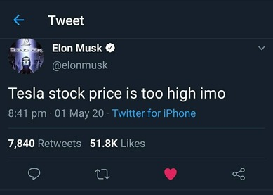
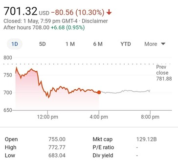

The tweet that wiped off $14 billion.
Note: This post was initially written for my college’s Finance Club as an Instagram post, later reproduced in this blog.

The Cause
The tweet that wiped off $14 billion.
Yesterday, Elon Musk tweeted that shares of his company “Tesla” had been valued too high. Ergo, within moments there was a downhill and it went as much as 13% down. Why would he degrade his own venture? Maybe he was tripping? After all - - you can’t blame him! (of course, for being high)

The Causation
Recently, Tesla’s Q1 earnings came out with whopping profits beating all the estimates amid the pandemic, as it didn’t affect the first two months of this holy year. The stock surged after the announcement as the numbers shocked everyone and further there was hope that it may hit the delivery targets for 2020 despite the pandemic.
Generally CEOs refrain from tweeting anything which is even remotely related to the listed company’s shares. But we all know, Mr.Elon isn’t a typical CEO who just tweets usual stuff, he loves fidgeting around with his companies for fun!
The choice of words, instead of Tesla shares being too high, even if he had tweeted - - “I’m too high” , I still doubt whether this would have avoided the crash. Because of the impeccable incidents that he depicted in the past, once he was seen smoking Marijuana on a live podcast and shares of Tesla tumbled 10%. It’s becoming a trend that when people like him and Donald Trump tweets something spicy, and if you could decode the tweet and jump into a position asap, you could make a fortune. Period.
This 64 characters long tweet made a hole of $3 billion in his own personal wallet. After about an hour he even tweeted that his girlfriend is mad at him.
Now, think of a naive investor who invested in Elon’s companies. Along with all those research for the investment, he has to monitor all these tweets 24x7. What can an average investor do to save himself? He should just turn on the notifications for Musk’s tweets XD.